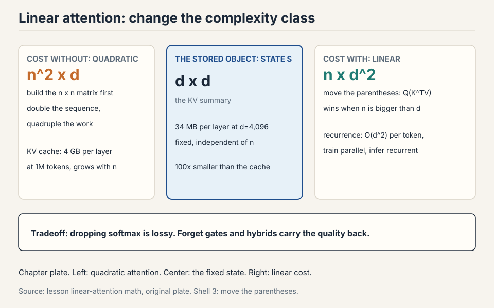
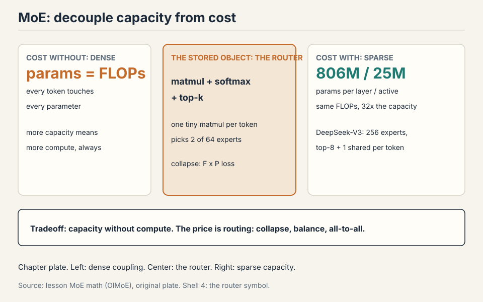

Lecture 4: Linear Attention and Mixture of Experts
Video blocked (ad-blocker or local file mode).
Watch on YouTubeVideo not loading? Watch on YouTube
Original lecture. Tatsu Hashimoto covers attention alternatives for long context and the full mixture-of-experts design space.
How to read this lesson
No prerequisites are assumed. Every term is defined at first use. This lecture has two halves and one theme: more capability per unit of compute. First half: attention in linear time. Second half: parameters you do not have to pay for. The previous lecture built the transformer block. This one rebuilds its two most expensive parts.
The problem: the quadratic bill comes due
Context windows keep growing. Vendors race to larger sizes on a log scale. The feedforward layers cost O(n): double the sequence, double the work. Attention costs O(n^2): double the sequence, quadruple the work. Past a point, attention dominates everything.
Two drawers of tools exist. Hybrids: mix cheap local layers with rare full-attention layers (last lecture’s sliding windows). Systems: FlashAttention rearranges attention to minimize memory traffic, a pure constant-factor win of about 2x that also avoids materializing the n x n matrix. Constants matter enormously. But for 5 to 10M tokens, constants are not enough. The complexity class itself has to change. That is where linear time comes in.
The one idea: move the parentheses
Write attention without the softmax for a moment: (QK^T)V. Matrix multiplication is associative. So (QK^T)V = Q(K^TV).

The left path builds the n x n score matrix first: cost n^2 x d. The right path builds a d x d summary, K^TV, first: cost n x d^2. Run the numbers. n = 1,000,000 tokens, d = 1,000 dimensions. Left: 1e15 operations. Right: ~1e12. Three orders of magnitude, from one parenthesis move. Sequence lengths are millions. Hidden dims are thousands. The right path wins. Every linear attention method is an elaboration of this reorder.
Subchapter: worked on a toy, both paths
Two tokens, two dimensions. Q = [[1,0],[0,1]], K = [[1,0],[1,1]], V = [[2,0],[0,3]].
left path: scores = QK^T = [[1,1],[0,1]]
out = scores x V = [[2,3],[0,3]]
right path: S = K^TV = [[1,0],[1,1]]^T x [[2,0],[0,3]]
= [[2,3],[0,3]]
out = Q x S = [[1,0],[0,1]] x [[2,3],[0,3]] = [[2,3],[0,3]]
both paths: [[2, 3], [0, 3]] same answer
Same answer, different work. The left path built a 2x2 score matrix. The right path built a 2x2 summary S and skipped the scores entirely. That summary S is the whole idea. It is small (d x d, not n x n), and everything flows through it.
Subchapter: the kernel view (keep an approximate softmax)
The lecture drops the softmax to get associativity. One idea further: keep an approximate softmax and still reorder. A feature map φ turns the softmax into a dot product: softmax(q, k) ≈ φ(q) · φ(k). With that, attention becomes φ(Q)(φ(K)^T V), and the parentheses move again.
Worked toy in 1D. q = 2, k = 3. True exp(qk) = e^6 ≈ 403. Feature map φ(x) = [1, x, x²/2] (Taylor of exp). φ(2)·φ(3) = 1 + 6 + (4×9)/4 = 16. Not exact, but the ranking survives: larger qk gives a larger dot product. Real kernels (elu(x)+1, random Fourier features) do this in d dimensions. One idea added: approximate first, then reorder. The softmax stays in spirit, the quadratic term leaves.

Subchapter: where the reorder wins and loses
The reorder wins when n >> d: long sequences, modest width. It loses when d >> n: short sequences, wide model. Work the crossover. Left cost: n^2 d. Right cost: n d^2. The right wins when n d^2 < n^2 d, i.e., d < n. For d = 4,096, the reorder wins past 4,096 tokens. Below that, plain attention is cheaper: the reorder adds overhead for no gain. This is why linear attention targets long context, not all context.
The RNN duality: train dense, infer recurrent
The right path has a second form. Sweep left to right, maintaining the summary as a running state: S_t = S_{t-1} + k_t v_t^T, then output q_t S_t.

Two views of the same math. Dense form: compute the whole summary in parallel, great for training on GPUs. Recurrent form: update a fixed-size state one token at a time, great for inference. RNNs were always good at inference and bad at training, because their state update had to run in order. Linear attention gets both: the dense-to-recurrent equivalence is exact.
Subchapter: the recurrent form, worked on the toy
Same toy as above. Q = [[1,0],[0,1]], K = [[1,0],[1,1]], V = [[2,0],[0,3]]. Start S_0 = [[0,0],[0,0]].
t=1: k1 = [1,0], v1 = [2,0]
S_1 = S_0 + k1 v1^T = [[2,0],[0,0]]
out_1 = q1 S_1 = [1,0] x [[2,0],[0,0]] = [2,0]
t=2: k2 = [1,1], v2 = [0,3]
S_2 = S_1 + k2 v2^T = [[2,0],[0,0]] + [[0,3],[0,3]] = [[2,3],[0,3]]
out_2 = q2 S_2 = [0,1] x [[2,3],[0,3]] = [0,3]
result: [[2,0],[0,3]]
Compare with the dense form’s [[2,3],[0,3]]. The outputs differ here because the dense form was non-causal (every query saw every key) while the recurrent form is causal (each query sees only past keys). Add the causal mask to the dense form and they match exactly. The duality is between causal-dense and recurrent. That is the form training and inference both use.
Subchapter: the state size, in numbers
The state S is d x d. At d = 1,000: 1M numbers, 2 MB in bf16. At d = 4,096: 16.8M numbers, 34 MB. Per layer, fixed, independent of n. A 1M-token context carries the same 34 MB state as a 1K-token context. The KV cache for the same context at 1M tokens: 1M x 4 KB (GQA-8) = 4 GB per layer. The state is 100x smaller and never grows. That is the inference prize.
The lossy step was dropping the softmax at the start. Everything after that is just algebra.
Dropping the softmax is exactly what enables the reorder: without it, associativity moves the quadratic term from n^2 to d^2, and the recurrent form gives fixed-size-state inference. Softmax attention needs a KV cache that grows with context. Linear attention carries a fixed state instead. The price is expressiveness: the all-to-all softmax connection is genuinely powerful, which is why every deployed system is a hybrid, not pure linear. The equivalence is between the two forms of linear attention, not between linear and softmax attention. Dropping the softmax is the lossy step. As you replace more softmax layers with linear ones, you lose more of the all-to-all modeling power, and long-context QA degrades first.
Where the reorder breaks: the state is dumb
Pure linear attention always carries the full state forward. S_t adds the new key-value pair and never forgets. Work the failure. A 1M-token document’s summary S is a d x d matrix: at d = 1000, that is 1M numbers. One million tokens of information compressed into one million numbers: one number per token, on average. Old tokens pollute the state forever. The model cannot erase.
The degradation is measurable. Controlled ablations (ByteDance Seed + UC Santa Cruz) show the hybrid pattern clearly: at low ratios of linear layers, no quality hit. Past a threshold, long-context performance degrades steadily toward pure-RNN levels. Single-key retrieval is explicitly optimized by these architectures and hides the degradation. QA reveals it: ask questions that need many scattered facts and the linear layers fail first.
The key question
The state can only accumulate. What if it could forget, and erase before writing? Two gates answer, one after the other.
The selective SSM, from zero
Before Mamba-2, there was the selective state space model. Build it from zero. A state space model is a recurrence with a fixed-size hidden state: h_t = A h_{t-1} + B x_t, y_t = C h_t. The matrices A, B, C are fixed. The state has constant size. This is an RNN with linear updates.
Subchapter: selection makes it input-dependent
The fixed matrices are the weakness: every token gets the same treatment. Selection makes B, C, and the step size input-dependent: the model computes them from x_t. Now the recurrence decides per token what to keep and what to ignore. A token carrying noise gets a small step size: it barely enters the state. A token carrying a name gets a large one: it writes strongly.
This is Mamba-1’s idea. The recurrence stays linear in the state (which keeps the fast parallel scan), but the coefficients vary with the input (which gives the selectivity of attention). One idea added to the SSM: let the input tune the recurrence.
Subchapter: the hardware-aware scan
The selective recurrence is still sequential: h_t needs h_{t-1}. The trick is the parallel scan: an associative operation can be parallelized with a tree reduction, like a parallel prefix sum. The selective SSM’s update is associative in the right form, so training runs the scan in O(log n) parallel steps instead of n sequential ones. Mamba-1 trains fast because the math was rewritten into a scannable form, not because the recurrence changed.
Mamba-2: learn when to forget
The LSTM lesson, relearned: add a forget gate. Mamba-2 adds gamma(t), computed from the current input only.

The update: S_t = gamma(t) x S_{t-1} + k_t v_t^T. When gamma is near 0, the past is wiped. When it is near 1, the past survives. Because gamma depends on the input and not the state, the dense/recurrent duality survives: the parallel training form still works. If the gate depended on the state, the recurrence would be sequential and training would stall. That constraint is the whole design.
Subchapter: Mamba-1 vs Mamba-2, one increment
Mamba-1 makes the SSM matrices input-dependent and computes the recurrence with a hardware-aware parallel scan. Fast at inference, because the state is fixed size. But the scan is the only fast path.
Mamba-2 rewrites the same selection idea as gated linear attention. The state update S_t = gamma(t) S_{t-1} + k_t v_t^T is exactly the gate from this lecture. One idea added: the SSD (state-space duality) form. Now the dense form trains in parallel on GPUs and the recurrent form infers with a fixed state, the same duality as linear attention. Mamba-1 selected. Mamba-2 selects and dualizes. Same selection, new math form, both fast paths available.
Subchapter: the state size in Mamba
Mamba’s state is d_model x d_state, with d_state typically 16. At d_model = 4,096: 65,536 numbers per layer, 131 KB in bf16. Compare the KV cache at 32K context with GQA-8: 32,768 x 4 KB = 128 MB per layer. The Mamba state is 1,000x smaller. Mamba-2’s larger state (the SSD form carries more per head) trades some of this for quality, but the ratio stays enormous. This is why hybrids use Mamba layers for the bulk of the sequence: the memory economics are not close.
Nemotron-3 alternates Mamba-2 layers with full softmax attention and matches strong models with much better long-context throughput.
The SSD (state-space duality) form. Mamba-1’s selective recurrence trained through a hardware-aware parallel scan: fast, but the scan was the only fast path. Mamba-2 rewrote selection as gated linear attention, S_t = gamma(t) S_{t-1} + k_t v_t^T, which has both a dense parallel form for training and a recurrent fixed-state form for inference. Same selection idea, new math form, both fast paths available. The constraint that makes it work: gamma depends on the input, not the state, so the recurrence stays parallelizable. A state-dependent gate makes the recurrence genuinely sequential: you cannot compute step t until step t-1’s state is known, which kills parallel training. An input-dependent gate is known for all t upfront (the inputs are all available during training), so the whole sequence parallelizes. That one constraint is the difference between a fast model and a slow one.
Gated delta net: erase before writing
Push further. Add a second gate beta(t) controlling how much of the current input enters the state, plus a projector (I - beta k k^T) that erases the old key direction before writing the new one.

The intuition: when writing key k_t, first remove what the state already stored along k_t, then add the new information. Same projector appears independently in meta-learning least squares and fast weight programming: different derivations, same solution. Qwen 3.5 and Qwen Next use a 3:1 gated-delta-net-to-attention hybrid with strong results and much higher decode throughput at long contexts.
Subchapter: the projector, worked on a toy
State S holds an old association for key k = [1, 0]: the first row of S is [5, 0] (stale information). New input arrives with the same key k = [1, 0] and new value v = [0, 3].
without projector: S_new = S + k v^T. Row 1: [5,0] + [0,3] = [5,3]. The stale 5 pollutes the new association. with projector (beta=1): S = S (I - k k^T) first. (I - k k^T) zeroes the k direction: row 1 becomes [0, 0]. Then add k v^T: [0, 3]. The stale 5 is gone before the write.
Erase before writing. The state never accumulates contradictions along the same key. One idea added to Mamba-2’s forget gate: the forget is targeted at the key being written, not global.
DSA: the indexer alternative
DeepSeek Sparse Attention takes a different route. Keep softmax attention, but run it on a subset. A lightweight indexer scores tokens from qk inner products through ReLU and learned weights, takes the top-k positions, and full attention runs only on those.

The indexer is cheap by design: low-dimensional, low-precision. The second stage is quadratic but on a short, bounded context. The clever deployment trick: train a normal transformer, then bolt the indexer on during the long-context extension phase you were running anyway. DeepSeek’s own report claims v3.2 matches Claude 4.5 Sonnet and Gemini 3 on its reported evaluations (the DSA report is linked in Go deeper). GLM5’s ablations show near-zero loss vs full attention even on hard retrieval. Note the pattern: top-k selection with an auxiliary loss is the same trick mixture-of-experts (MoE) routing uses below. An auxiliary loss is a second training objective added beside the main loss. It shapes behavior the main loss ignores, like picking the right tokens or keeping experts balanced.
Subchapter: the indexer cost, worked
Full attention on n = 128K, d = 128: 2 x n^2 x d = 4.2e12 FLOPs per head. The DSA indexer runs at d_index = 32 in fp8: roughly 2 x n^2 x 32 / 4 (low precision) = 2.6e11, about 16x cheaper. Then top-k = 4,096 tokens get full attention: 2 x 4,096^2 x 128 = 4.3e9. Total: 2.6e11 + 4.3e9, about 16x cheaper than full attention. The indexer is still quadratic, but with tiny constants. The top-k stage is quadratic on a short context. Both terms beat n^2 x d.
Linear attention changes the complexity class to O(n) via the associativity reorder, at the cost of dropping softmax expressiveness. It needs hybrid softmax layers to stay competitive. DSA keeps full softmax quality on a top-k subset chosen by a cheap indexer. The indexer itself is still quadratic but with tiny constants. Sliding windows keep exact softmax in a fixed local window plus periodic global layers. Simplest, but the window bound is rigid. All three ship as hybrids with full attention, never pure. Training with the indexer is complex and annoying, and you run long-context extension anyway. Bolting it on in that phase costs little extra training and works surprisingly well despite the non-differentiable top-k. Do the expensive thing once, add the cheap thing late.
Half two. The problem: parameters cost FLOPs
Dense models tie parameters to FLOPs: every parameter fires on every token. A 1T-parameter dense model costs 1T-scale FLOPs per token. What if most parameters could sit idle most of the time? Then parameters could grow without the FLOP bill growing.
MoE: more parameters than you pay for
Replace the MLP with several smaller FFNs called experts. A router sends each token to one (or k) of them. Four experts of the original size: 4x the parameters, about 1x the FLOPs per token.

The evidence: Switch Transformer (Fedus et al. 2022) shows test loss falling as expert count rises at fixed active parameters. OlMoE trains about 2x faster than its dense counterpart. DeepSeek v2 showed far fewer active parameters matching or beating dense models. Past a certain size, nearly every released model is an MoE.
MoE is also a parallelization axis: experts are natural chunks for different devices (expert parallelism), trading communication for the ability to scale further.
Subchapter: the arithmetic of sparsity
Work a concrete layer. d_model = 4,096, 64 experts, each expert a SwiGLU FFN with intermediate dim 1,024 (fine-grained: small experts). Top-2 routing.
params per expert: 3 x 4096 x 1024 = 12.6M total MoE params: 64 x 12.6M = 806M active per token: 2 x 12.6M = 25M dense equivalent: 3 x 4096 x 14336 = 176M (matched to ~25M active? no)
Compare fairly: a dense FFN with the same active compute has intermediate dim 2,048 (3 x 4096 x 2048 = 25M). The MoE layer holds 806M parameters and computes 25M per token. The dense layer holds 25M and computes 25M. Same FLOPs per token, 32x the parameters. The parameters are capacity. The FLOPs are the bill. MoE separates them.
Because parameters keep helping even when only a subset is active per token. At fixed training FLOPs, more experts means lower loss. At fixed inference FLOPs, fewer active parameters means cheaper serving at the same quality. The Switch and OlMoE results show this is not subtle: about 2x training speedups and strictly better loss at matched compute. Above the size where infrastructure can handle routing, there is little reason to stay dense. Infrastructure complexity. Routing adds communication, experts must be sharded across devices, training needs balancing heuristics, the router softmax is a stability risk, and fine-tuning overfits badly. Small labs often stay dense because the operational cost exceeds the quality gain at their scale.
Token-choice TopK routing: one matmul
Three routing designs exist: token chooses experts, expert chooses tokens, or a global assignment solver. Nearly everything ships token-choice TopK: each token picks its k favorite experts. OlMoE shows token choice beats expert choice on both loss and benchmarks.
The router itself is embarrassingly simple: one matmul. Each expert owns a vector. Score = inner product with the token. Softmax. Take top-k. Hash routing (no learning) works a little. RL routing works but nobody uses it: too much overhead and variance for what heuristics achieve. Global linear assignment is optimal and far too expensive.

Subchapter: the router, worked on a toy
Token x = [0.5, -0.2, 0.8, 0.1], 4 experts with router vectors:
expert A: [1, 0, 0, 0] score = 0.5 expert B: [0, 1, 0, 0] score = -0.2 expert C: [0, 0, 1, 0] score = 0.8 expert D: [0, 0, 0, 1] score = 0.1 softmax([0.5, -0.2, 0.8, 0.1]) = [0.284, 0.141, 0.384, 0.191] top-2: C (0.384), A (0.284). Renormalize: [0.575, 0.425]. output = 0.575 * expert_C(x) + 0.425 * expert_A(x)
One matmul (x against 4 vectors), one softmax, one top-k. The whole router is smaller than one attention head. The complexity is not in the router. It is in what the router’s decisions do to the system.
Subchapter: fine-grained and shared experts
DeepSeek’s widely copied refinement: fine-grained experts (many small ones instead of few big) plus shared experts that bypass the router and process every token. Common processing moves to the shared expert. Routed experts specialize. OlMoE disagrees slightly on shared experts helping, but agrees fine-grained helps.
Work why fine-grained helps. 8 big experts, top-2: each token picks 2 of 8, so 28 possible pairs. 64 small experts (1/8 the size), top-8: each token picks 8 of 64, so 4 billion possible combinations. Same active compute, vastly more combinatorial choice. The router can compose specialists instead of picking generalists.
Subchapter: the routing zoo (who chooses whom)
Three designs, one worked toy. Router scores for 4 tokens and 2 experts:
A B tok1 0.72 0.31 tok2 0.28 0.89 tok3 0.95 0.42 tok4 0.33 0.76
Token-choice top-1. Each row picks its max. tok1 goes to A, tok2 to B, tok3 to A, tok4 to B. Every token gets its best expert. Load is 2 and 2 here, but nothing guarantees it: collapse is the failure mode. OlMoE shows token-choice beating expert-choice on both loss and benchmarks.
Expert-choice top-2. Each column picks its top 2. A takes tok3 (0.95) and tok1 (0.72). B takes tok2 (0.89) and tok4 (0.76). Load is balanced by construction: 2 each, always. One idea flipped: the experts choose. The price: a token can be dropped if no expert picks it, and tokens get experts that ranked them low. Balance is free, coverage is not.
Hash. Token i goes to expert (i mod E). No learning, no collapse, worse loss. The baseline that ships nowhere.
The ladder: learn who chooses (token), flip the chooser (expert), remove the learning (hash). Token-choice plus the F x P aux loss is the production answer.

Because load balance is not the objective. Loss is. Token-choice gives every token its best experts, so each token gets the highest-quality computation. Expert-choice gives every expert a fair workload, so some tokens get served by experts that scored them low, or get dropped entirely. OlMoE’s ablations show token-choice beating expert-choice on both loss and benchmarks. The field’s answer: take token-choice and pay for balance separately with the F x P auxiliary loss. When the serving system cannot tolerate imbalance. Expert-choice guarantees fixed compute per expert per step, which simplifies capacity planning. Production frontier models still pick token-choice, but research systems with strict device budgets sometimes prefer the guarantee.
Where MoE breaks: rich gets richer
Sparsity during training is the hard part: only k experts are active, so gating is non-differentiable and you never see the counterfactual experts. The failure mode is collapse. The chosen experts get gradient signal, get stronger, get chosen more, and the model ends with two experts doing everything while the rest sit idle.
The OlMoE ablation is stark: remove the balancing loss and nearly all tokens pile onto two experts. The rest of the parameters do nothing for most of training. Work the waste: 64 experts, 2 active, 62 dead. You paid for 64 and got 2.
Subchapter: the F x P loss, worked
The fix is the Switch auxiliary loss: L = F x P, where F is the fraction of tokens dispatched to expert i and P is the router’s probability mass on expert i. The gradient of F x P with respect to P is F: popular experts get pushed down in proportion to their popularity. Not derived from first principles. Understood through its gradient action.
Work it. 4 experts, 100 tokens. Dispatch: A gets 70, B gets 20, C gets 8, D gets 2. F = [0.7, 0.2, 0.08, 0.02]. Router mass P = [0.6, 0.25, 0.1, 0.05]. L = sum(F x P) = 0.42 + 0.05 + 0.008 + 0.001 = 0.479. The gradient pushes P_A down hardest (F_A = 0.7): the router learns to send fewer tokens to A. Over steps, the dispatch evens out. The loss does not know what the experts do. It only knows the load.

Subchapter: aux-loss-free balancing (DeepSeek-V3)
DeepSeek v3 moves toward aux-loss-free balancing with a per-expert bias term, though some auxiliary loss remains against extreme imbalance. The mechanism: add a bias b_i to each expert’s router score. After each step, measure the load: experts above the average get their bias decreased, experts below get it increased. The bias steers routing without touching the loss function, so the main objective never pays a balancing tax.
Work one step. Expert A load 40%, average 25%. Bias b_A -= 0.01. Next step, A’s scores drop by 0.01: marginal tokens flip to other experts. The bias is a thermostat, not a penalty. The lecture notes the direction: the field is moving from loss-based to bias-based balancing.
DeepSeek v2 adds device-level balancing (balance machines, not just experts) as a second auxiliary loss.
MoE systems and stability notes
Subchapter: expert parallelism and the all-to-all
Expert parallelism shards experts across devices. Each token’s top-k experts usually live on different devices, so every MoE layer does an all-to-all exchange: each device sends each token’s activations to the devices holding its experts, then receives the results back.
Work the traffic. Batch 4,096 tokens, d_model 4,096, bf16, top-8. Per layer per step: 4,096 x 8 x 4,096 x 2 bytes = 268 MB moved in the all-to-all (before the return trip). At 50 GB/s inter-node bandwidth: ~5.4 ms per layer per step if serialized. Overlap and NVLink cut this, but the all-to-all is the MoE tax. This is why DeepSeek limits each token to 4 nodes: the routing is node-constrained to bound the traffic.
Expert parallelism ships activations between devices, so communication is the tax. Nemotron-3 downprojects the residual stream before the all-to-all collective: smaller vectors to move, without shrinking the model’s hidden dim.
Subchapter: the capacity factor and token dropping
Each expert has a capacity: the max tokens it accepts per step. Capacity factor 1.0 means exactly the average load. Tokens beyond capacity are dropped: they skip the MoE layer entirely (their residual stream passes through unchanged).
Work it. 4,096 tokens, 64 experts, capacity factor 1.25. Average load: 64 tokens per expert. Capacity: 80. If the router sends 100 tokens to expert A, 20 are dropped. Dropping is silent: no error, just missing computation. Early MoE inference dropped tokens when an expert’s queue overflowed, making outputs depend on other users’ traffic. Modern frameworks (MegaBlocks and descendants) fixed this.
The capacity factor is a knob: 1.0 is efficient but drops tokens under imbalance, 2.0 never drops but wastes half the expert compute. Production uses 1.25 to 1.5.
Subchapter: router stability
The router adds another softmax, another danger zone. Fixes that ship: run the router in fp32, and put z-loss on the router (OlMoE ablations show it calms spiky loss curves). The router’s softmax over 256 experts is the widest softmax in the model: the most chances for one logit to explode.
Subchapter: fine-tuning overfits
Fine-tuning MoEs overfits badly: huge train/val gaps vs dense models. Common workarounds: fine-tune attention only, fine-tune non-MoE layers, or just use far more data. The mechanism: 671B parameters with a small fine-tuning set means every expert memorizes its few tokens. Dense models have fewer parameters to overfit with.
Subchapter: upcycling, worked
Upcycling: copy a trained dense model’s MLPs into experts, add a random router, keep training. It gave real wins: miniCPM 2.4B to 13.4B, Qwen 1.8B to a strong 2.7B MoE. Nobody does it now: train the MoE from scratch instead.
Work the miniCPM case. Dense 2.4B model, MLP per layer ~60M. Copy each MLP 8 times into 8 experts: the MoE layer holds 480M. Add a random router. Keep training. The experts start identical (copies) and diverge as the router learns to specialize them. The win: you skip the early training where the model learns basics, because the dense checkpoint already knows them. The reason nobody does it now: from-scratch MoE training got efficient enough that the complexity is not worth it.
Token x arrives, dim 4096. The router scores 256 experts: one matmul xW_g, a softmax, then top-8. Say experts 7, 42, 103, 118, 155, 190, 221, 244 win, with weights renormalized to sum to 1. Each chosen expert runs its SwiGLU FFN on x: up to 2048 dims and back down. The shared expert also runs on x. Output = shared(x) + sum of w_i * expert_i(x). FLOPs: 8 small experts plus 1 shared, about the same as one dense FFN. Parameters touched: 9 experts’ worth. The other 247 experts sit idle. That is the whole trick: capacity without the bill. Back through the 8 chosen experts and the router weights w_i, plus the router’s own scores via the softmax. The 247 idle experts get no gradient from this token. That sparsity is why MoE needs the balancing loss: experts that never get chosen never learn.
Memory capacity and expert all-to-all communication. 1T parameters in bf16 is 2TB: you need many GPUs just to hold the weights, so expert parallelism shards experts across devices. Each token’s top-8 experts usually live on different devices, so every layer does an all-to-all exchange of activations. At batch size 1 the all-to-all latency dominates. The fixes from the field: downproject before the collective (Nemotron-3), keep hot experts on the same device, and quantize weights to fp8. The interview signal: name the two bottlenecks (capacity, all-to-all), then the tool that attacks each. The all-to-all moves activations per token per layer. Small batches give the communication nothing to amortize against, so latency per token stays high. Large batches amortize it but need more KV cache. MoE serving is a batch-size negotiation between the router’s traffic and the cache.
Below the size where your infrastructure can handle routing. The operational cost (expert parallelism, all-to-all tuning, balancing losses, router stability) exceeds the quality gain at small scale, and MoE fine-tuning overfits worse. The rule from the lecture: past a certain size nearly every released model is an MoE, because the threshold is operational, not scientific. If you cannot afford a systems engineer for the router, stay dense. Yes, on loss: Switch Transformer showed gains at modest sizes. The question is total cost, not loss. At small scale the extra engineering and serving complexity outweigh the loss win. That is why small labs stay dense while frontier labs go MoE.
DeepSeek v1 to v3: the evolution in one screen
v1 is the platonic MoE: shared + fine-grained experts, TopK routing, auxiliary balancing. v2 scales up with two shared experts and adds device-routing and communication-balancing losses: systems respect as architecture. v3 goes aux-loss-free-ish with per-expert bias, switches expert weighting to sigmoid+softmax, and adds two more ideas: MLA and MTP.
Subchapter: MLA, the attention upgrade
Multi-head Latent Attention compresses Q/K/V into a low-dimensional latent c, and the KV cache stores c instead of K and V. Care needed where MLA meets RoPE in the cache: the decoupled RoPE stream rides alongside the latent. (Full MLA numbers are in L03: 64 KB per token per layer becomes 1.1 KB, 57x smaller.)
Subchapter: MTP, the training upgrade
Multi-Token Prediction predicts several future tokens at once instead of one. The statistical win: the model learns longer-range dependencies because it must commit to tokens 2 and 3 ahead, not just the next one. The systems win: MTP doubles as a built-in speculative decoder at inference. Predict 2 tokens per step, verify both, keep the ones that pass. The lecture notes both uses.
Subchapter: what is used where (MoE and linear hybrids in production)
Verified against public reports as of October 2026.
| Model | Long-context answer | MoE design | Source |
|---|---|---|---|
| DeepSeek-V3 | MLA | 256 experts, top-8 + 1 shared | DeepSeek-V3 paper |
| DeepSeek v3.2 | MLA + DSA bolt-on | same as V3 | DeepSeek report; lecture |
| Kimi K2 | MLA | 384 experts, top-8 + 1 shared | Kimi K2 report (arXiv 2507.20534) |
| Qwen3-235B-A22B | GQA, no linear layers | 128 experts, top-8, no shared, QK-norm | Qwen3 report |
| Nemotron-3 | Mamba-2 + attention hybrid | MoE | NVIDIA; lecture |
Read it. MLA won the open frontier twice (DeepSeek, Kimi K2). Routed expert counts grew: 128, then 256, then 384, always top-8 active. The shared expert survived at DeepSeek and Kimi but not at Qwen3, which dropped it and added QK-norm instead: the DeepSeek recipe is not the only answer. And Qwen3 shows a frontier lab shipping no linear attention at all: GQA plus scale still competes.
The production table above is the figure: every model is a row.
Mapping back: what each idea fixes
| Pain | Fix | How |
|---|---|---|
| n^2 attention at long context | Associativity reorder | (QK^T)V = Q(K^TV). Cost n^2 d becomes n d^2. |
| KV cache grows with context | RNN duality | Fixed-size state S_t updated recurrently at inference. |
| State never forgets | Mamba-2 gamma(t) | Input-dependent forget gate. Duality survives. |
| State overwrites blindly | Gated delta net | (I - beta k k^T) erases the old key direction first. |
| Quality loss at high linear ratios | Hybrids | Keep some full softmax layers. Low ratios free, high ratios degrade. |
| Softmax too expensive, quality needed | DSA | Cheap indexer picks top-k. Full attention on the subset. |
| Parameters cost FLOPs | MoE | Route each token to k experts. Params up, FLOPs flat. |
| Experts collapse | F x P aux loss | Gradient pushes mass off popular experts. |
| Router softmax spikes | fp32 router, z-loss | Calm the danger zone. |
| All-to-all dominates serving | Node-limited routing, downproject | Bound the traffic before the collective. |
The honest price
Linear attention only ships as a hybrid. The ablations are clear: past a threshold ratio, long-context QA degrades toward pure-RNN levels. The pure linear model is a research object, not a product. DSA’s frontier-matching claims come from DeepSeek’s own report.
MoE’s price is operational. Routing adds communication. Experts must be sharded. The router is another softmax to guard. Fine-tuning overfits. Small labs stay dense because at their scale the infrastructure cost exceeds the quality gain. And the deepest caveat from the lecture: these are engineering verdicts, not theorems. They hold until the next ablation says otherwise.


Recap: the whole lesson on one screen
The story in eight steps. Each step answers the one before it.
- The bill comes due. Attention is O(n^2), the FFN is O(n). At 5-10M tokens, constant-factor wins like FlashAttention are not enough. The complexity class must change.
- Move the parentheses. (QK^T)V = Q(K^TV). Drop the softmax, reorder, and n^2 d becomes n d^2. The reorder wins when n > d.
- Train dense, infer recurrent. S_t = S_{t-1} + k_t v_t^T runs parallel for training and as a fixed-size state for inference. The state is d x d: 34 MB at d = 4,096, fixed for any n.
- The state is dumb. It only accumulates. Selection (Mamba-1) makes the recurrence input-dependent. The parallel scan keeps training fast.
- Gates make the state smart. Mamba-2’s gamma(t) forgets. Input-dependent only, so the duality survives. The gated delta net erases the old key direction before writing. State: 131 KB per layer vs 128 MB of KV cache.
- DSA indexes, then attends. A cheap indexer picks top-k tokens. Full attention runs on the subset. 16x cheaper, bolted on during extension.
- MoE decouples params from FLOPs. Route each token to k experts. 806M params, 25M active: same FLOPs, 32x the capacity. The router is one matmul plus top-k.
- Balance or collapse. F x P aux loss, then bias-based balancing. Expert parallelism pays the all-to-all tax. Capacity factor 1.25.
Go deeper
- Lecture 4, the session this chapter follows (the embed above): https://www.youtube.com/watch?v=cKSwj_qZ8Jg
- Mamba Explained (the embed above): https://www.youtube.com/watch?v=9dSkvxS2EB0
- Gu and Dao, Mamba: Linear-Time Sequence Modeling: https://arxiv.org/abs/2312.00752
- Dao and Gu, Mamba-2: https://arxiv.org/abs/2405.21060
- DeepSeek-V3 Technical Report: https://arxiv.org/abs/2412.19437
- Fedus et al., Switch Transformers: https://arxiv.org/abs/2101.03961
- Songlin et al., Gated DeltaNet: https://arxiv.org/abs/2412.06464
- DeepSeek Sparse Attention: https://arxiv.org/abs/2502.11089
Official sources and further reading
Official: - Lecture 4 video and slides. - Fedus et al. (2022): Switch Transformer, expert scaling and the F x P auxiliary loss. - Dao and Gu (2024): Mamba-2, the gated linear-attention view. - DeepSeekMoE (2024): fine-grained and shared experts.
Further reading: - OlMoE (Ai2): the careful open MoE study, token-vs-expert choice, load-balancing and z-loss ablations: https://arxiv.org/abs/2409.02060 - Kimi K2 report: 384-expert MoE with MLA: https://arxiv.org/abs/2507.20534
Caveats from these sources. Hybrid-ratio ablations are messy and from one study. Treat the degradation curves as directional. DSA frontier-matching claims come from DeepSeek’s own report. Upcycling is documented but currently unfashionable: no 2026 examples. MoE fine-tuning overfitting numbers are from one GLUE-style task. Kimi K2 and Qwen3 details are from their public reports.
Connections to the other courses
- CS224N: softmax attention is defined there. This lecture is the linear-time diff.
- CS336 L03: the transformer block this lecture modifies. RoPE meets MLA in the KV cache.
- CS336 later lectures: the KV cache from the inference lecture is what DSA and MLA shrink. Expert parallelism returns in the systems lectures. MTP’s speculative decoder returns in inference.
- CS329Z: the router is a tiny agent: observe token, pick expert, get reward via gradient.
Linear attention + MoE cheatsheet. Reorder: (QK^T)V = Q(K^TV), n^2 d to n d^2, wins when n > d. Duality: dense trains, recurrent infers, state d x d fixed. Mamba-1: input-dependent recurrence + parallel scan. Mamba-2: gamma(t) forget gate, SSD duality. Delta net: erase key direction before writing. DSA: cheap indexer, top-k, full attention on subset. MoE: route to k experts, params up, FLOPs flat. Router: one matmul + top-k. Balance: F x P, then bias thermostat. Systems: all-to-all tax, capacity 1.25, fp32 router.
The two halves. Linear attention: change the complexity class. MoE: change the parameter bill. Both ship as hybrids. Both pay a systems tax.
Coverage map: every lecture claim, mapped
Each row ties a claim from Lecture 4 (transcript sources/cs336/text/lec04.txt,
video cKSwj_qZ8Jg) to the section that covers it.
| Session claim | Covered in | File line |
|---|---|---|
| Context windows grow on a log scale; attention O(n^2), FFN O(n) | The problem: the quadratic bill comes due | 52 |
| FlashAttention is a 2x constant-factor win, not a complexity change | The problem: the quadratic bill comes due | 52 |
| Associativity: (QK^T)V = Q(K^TV); 1e15 vs ~1e12 at n=1M, d=1K | The one idea: move the parentheses | 67 |
| Toy both-paths worked: [[2,3],[0,3]] | worked on a toy, both paths | 82 |
| Kernel view: feature map phi, approximate softmax then reorder | the kernel view | 101 |
| Reorder wins when n > d; crossover at 4,096 tokens | where the reorder wins and loses | 118 |
| RNN duality: S_t = S_{t-1} + k_t v_t^T; dense trains, recurrent infers | The RNN duality | 128 |
| Recurrent form worked causally on the toy | the recurrent form, worked on the toy | 143 |
| State size: d x d, 34 MB at d=4096, fixed for any n | the state size, in numbers | 165 |
| Softmax drop is the lossy step; rest is algebra | The RNN duality | 128 |
| State is dumb: 1M tokens into 1M numbers; QA degrades past threshold | Where the reorder breaks | 183 |
| Selective SSM: input-dependent B, C, step size | The selective SSM, from zero | 205 |
| Parallel scan: associative form trains in O(log n) steps | the hardware-aware scan | 227 |
| Mamba-2: gamma(t) forget gate, input-dependent only | Mamba-2: learn when to forget | 237 |
| Mamba-1 vs Mamba-2: scan vs SSD duality | Mamba-1 vs Mamba-2, one increment | 251 |
| Mamba state 131 KB/layer vs 128 MB KV cache | the state size in Mamba | 265 |
| Nemotron-3: Mamba-2 + attention hybrid | the state size in Mamba | 265 |
| Gated delta net: beta(t) + (I - beta k k^T) projector | Gated delta net: erase before writing | 285 |
| Projector worked: stale [5,0] erased before writing [0,3] | the projector, worked on a toy | 300 |
| Qwen 3.5 / Qwen Next 3:1 hybrid | Gated delta net: erase before writing | 285 |
| DSA: cheap indexer, top-k, full attention on subset | DSA: the indexer alternative | 318 |
| DSA bolted on during long-context extension | DSA: the indexer alternative | 318 |
| DSA indexer cost: ~16x cheaper, worked | the indexer cost, worked | 333 |
| MoE: 4 experts, 4x params, 1x FLOPs; Switch/OlMoE/DeepSeek v2 evidence | MoE: more parameters than you pay for | 356 |
| Expert parallelism as a scaling axis | MoE: more parameters than you pay for | 356 |
| Sparsity arithmetic: 806M params, 25M active | the arithmetic of sparsity | 374 |
| Token-choice TopK; OlMoE token > expert choice | Token-choice TopK routing: one matmul | 400 |
| Router worked: softmax over 4 experts, top-2, renormalize | the router, worked on a toy | 416 |
| Fine-grained + shared experts; combinatorial argument | fine-grained and shared experts | 434 |
| Routing zoo: token-choice, expert-choice, hash on one toy | the routing zoo (who chooses whom) | 449 |
| Collapse: chosen experts get stronger; OlMoE 2-expert pileup | Where MoE breaks: rich gets richer | 490 |
| F x P loss worked: gradient pushes mass off popular experts | the F x P loss, worked | 503 |
| Aux-loss-free bias thermostat (DeepSeek-V3) | aux-loss-free balancing (DeepSeek-V3) | 522 |
| All-to-all traffic: 268 MB/layer/step, node-limited routing | expert parallelism and the all-to-all | 543 |
| Capacity factor 1.25; token dropping history | the capacity factor and token dropping | 564 |
| Router in fp32; z-loss on router | router stability | 582 |
| MoE fine-tuning overfits; workarounds | fine-tuning overfits | 590 |
| Upcycling: miniCPM 2.4B->13.4B, Qwen 1.8B MoE | upcycling, worked | 599 |
| DeepSeek v1/v2/v3 evolution; MLA; MTP | DeepSeek v1 to v3 | 633 |
| Production table: V3, v3.2, Kimi K2, Qwen3, Nemotron-3 | what is used where | 659 |
Sources
- VIDEOLecture 4 video, Stanford Online YouTube
- NOTESOfficial subtitle transcript (en-US)
- SLIDESLecture 4 slides (PDF)
- PAPERFedus et al., Switch Transformers (2022)
- PAPERDao and Gu, Mamba-2 (2024)
- PAPERGu and Dao, Mamba (2023)
- PAPERDeepSeek-AI, DeepSeekMoE (2024)
- SUPPLEMENTOlMoE: open mixture-of-experts study (Ai2)